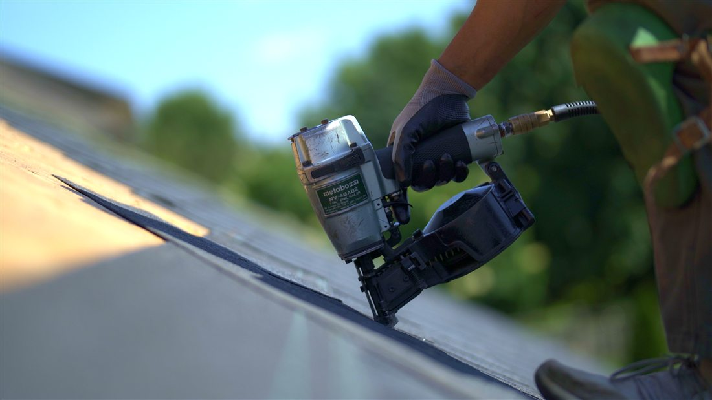

Professional roof repair and replacement, built to perform through Ontario's winters — accurate diagnosis, honest pricing, no runaround.
Tell us about your property and we'll follow up as quickly as possible.
Many roofing issues aren't caused by age alone. They're caused by improper installation, overlooked details, or repairs that never addressed the root cause. We identify active leaks, flashing issues, ventilation problems, and winter-related damage like ice dams — then fix it right the first time.

"We give you a real answer, a real timeline, and a crew that actually shows up when we say we will."
Every service is backed by clear photo documentation and a straight answer on cost before we start.
Precise leak diagnosis and targeted repairs — no unnecessary work, no inflated invoices.
Specialized diagnosis and servicing for flat and low-slope roofing systems.
Free estimates for a leak-free, guaranteed roof replacement — residential or commercial.
Same-day response time for unexpected leaks. Call or text and we'll prioritize you.
Heat trace cable installation to protect your roof from aggressive ice dam build-up.
Safe, professional ice dam removal to prevent water backup and interior damage.
We know how KW winters and storms actually affect roofs here.
We find the real source of a leak, not just the nearest symptom.
Every job follows a safety-first process, top to bottom.
Photo documentation and clear communication at every step.
We solve the problem for good — not a patch that fails next season.
Fully licensed and insured for residential and commercial roofing work.
Real jobs, real homes across Kitchener-Waterloo.
Every job is handled by trained local roofers who treat your home like their own.
Ice dams, heat loss, and surprise leaks are avoidable. Our Winter Prep Program keeps your roofing costs to a minimum with a clear, no-obligation plan.
Fill out a simple, no-obligation form and write "winter prep" in the description — we'll take it from there.
Start Winter PrepWe'd rather you check our reviews on Google than take our word for it.
We handle small roof repairs, flat roof repairs, full residential and commercial roof replacement, emergency leak repairs, heat cable installation, and ice dam removal across Kitchener, Waterloo, Cambridge, Elmira, and Guelph.
Yes. We prioritize same-day response for active leaks and storm damage — call or text (519) 721-4969 and we'll get to you as quickly as possible.
We diagnose the actual source of the problem first — flashing issues, ventilation problems, improper installation, or ice dam damage — rather than defaulting to the most expensive fix. If a targeted repair solves it, that's what we recommend.
It's a no-obligation, pre-season plan that covers heat cable installation, minor repairs before winter hits, a roof replacement timeline estimate if needed, and honest advice on keeping costs down before ice dams and heat loss become a problem.
Cost depends on the size of the roof, the type of damage, and the materials involved. We provide a free, no-obligation quote after assessing your roof, with no hidden costs.
Kitchener, Waterloo, Cambridge, Elmira, Guelph, and the surrounding areas.
Yes. Your Roof Specialist is fully licensed and insured for residential and commercial roofing work.
Serving Kitchener, Waterloo, Cambridge, Elmira, Guelph, and surrounding areas.